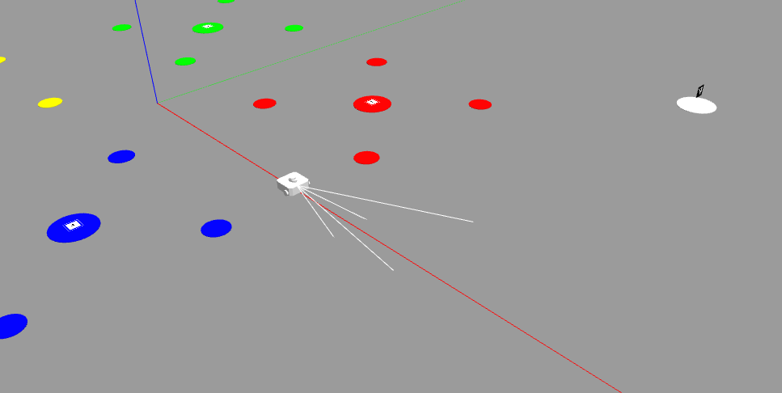
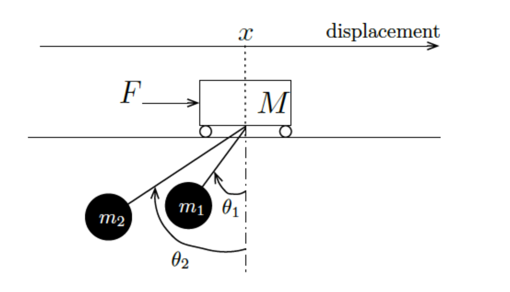
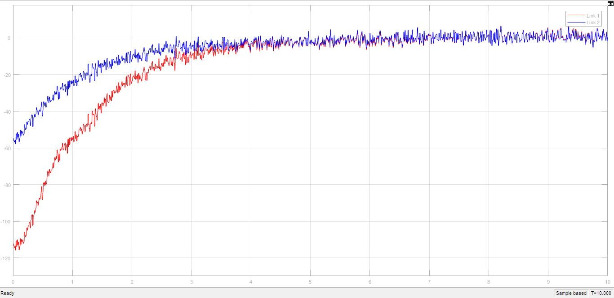
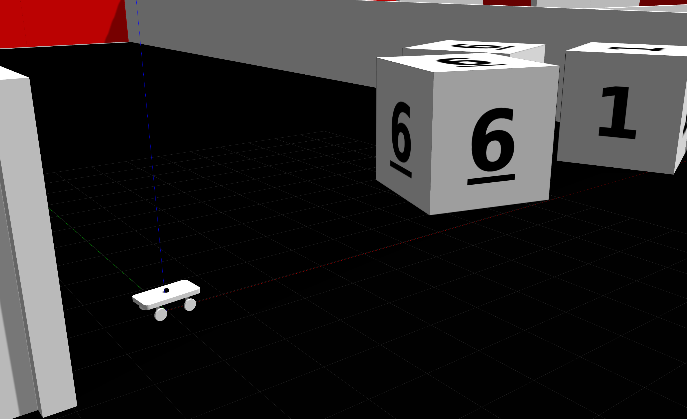
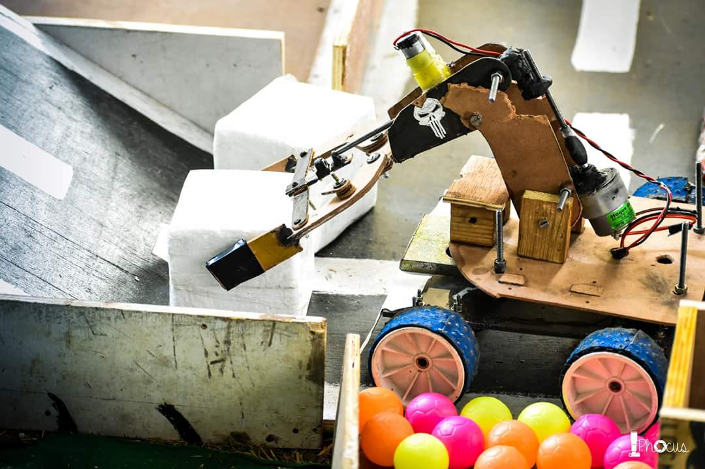

Hi. I am Vineet Singh
A Roboticist, currently pursuing Master's in Robotics at University of Maryland, College Park.
Skilled in ROS, C++, Python, and Machine Learning.
About me

I am Vineet, a robotics enthusiast trying to find ways to apply principles of robotics in every industry.
Having a professional experience in a techno-commercial role in railways industry, I have good understanding of Finances, Product Development, and Formal Communications.
Graduating from highly technical electrical engineering background, I worked in a techno commercial role with a decent performance, which highlights my abilites as a
quick learner and highly adaptable. I am curious to learn about new fields, and instead of seeing them as a challenge, I rather see them as opportunity to learn new skills.
Over the years I have worked with many different teams, and have developed good communication and interpersonal skills which I find very handy whenever I am suppose to work with a new individual.
I enjoy music and have done training on guitar and I also taught beginner students alongside my teacher, when I was in Bangalore. I like reading and mediation,
and in my free time I like playing football/soccer and badminton. My latest interest is in swimming, and it is almost developed like a hobby since December'22.
Below sections highlights the projects that I have done, my professional experience, my educational background and skills.
Projects
In this project, a model based on KUKA LBR iiwa R820 is created in SOLIDWORKS and simulated using ROS Noetic and Gazebo

In this project, a turtlebot model equipped with camera is used to read Aruco markers and go to multiple goals

In project, a detailed study of a given non-linear system is done and multiple control techniques are designed to control the system.

In this project, a control scheme is implemented for a nonlinear system with time varying uncertain parameters

In this project, a 4-wheel drive mobile robot is designed in SOLIDWORKS, and the robot is controlled using ROS Noetic and simulated in GAZEBO.

Held in Van Nuys, California, our team (Team Phoenix) participated in the event, and we won 1st rank globally in Design Report, and were ranked 9th for overall performance. I was the technical head of the team for this competition. More details on project details page.

Ojass is the annual technical fest at NIT Jamshedpur, and my team participated in multiple robotics competition, and won many of those events. Full description on Project details page.
Work Experience
Buyer at ALSTOM Transport India Limited
SKILLS Learnt: Contract negotiation, price negotiation, component pricing, global sourcing, supplier development, quality and capacity assessment for suppliers, formal communication, team management, supplier management and relationship development, customer handling, pricing analytics, Inventory management, SAP ARIBA
- Brought in approx. ~1.5 Million Euros in savings with successful localization of Brake system Test bench equipments in India.
- This ended ALSTOMs dependency on OEMs for Test bench delivery, and also set a benchmark for Test bench equipments pricing within ALSTOMs.
- In this project I managed the complete sourcing package, including supplier development, contracts and price negotiations, purchase order releases, delivery within timeline, and commissioning support.
- As a Buyer, I also handled the localization of Parking Brake release mechanisms for the first time with Indian suppliers.
- This project started as a trial for our Lucknow metro, but the final developed product were so good, and efficient that we onboarded the supplier as a panel supplier and were given 4 new projects under me. The developed part was standardised for all upcoming projects.
- Other than the above 2 projects, I managed the Quality and Engineering claims settlement with suppliers for projects under warranty, for all the subsystem components.
- I was also responsible for service requirements sourcing and purchase, and developing suppliers locally to address all project needs.
- As part of above responsibility, I onboarded multiple supplier for investigation in ALSTOM Supplier List, and some were declared included in panel while I was at ALSTOM.
- Overall, I supported metro projects of Lucknow, Kochi, Chennai, DMRC RS11, ELoco. And also partially supported projects in Bangkok, Singapore, Kuala Lumpur as and when the need arised.
Education Background
| Degree/Course |
School/University |
CGPA/Percentage |
Year of Graduation |
| M.Eng in Robotics* |
University of Maryland, College Park |
4.0/4.0 |
2024 |
| B.Tech in Electrical and Electronics Engineering |
National Institute of Technology, Jamshedpur |
8.35/10 |
2020 |
| Higher Secondary, CBSE |
Vidya Bharati Chinmaya Vidyalaya, Jamshedpur |
92% |
2016 |
| Secondary School, ICSE |
Ramakrishna Mission English School, Sidhgora, Jamshedpur |
90.4% |
2014 |
|
*ongoing |